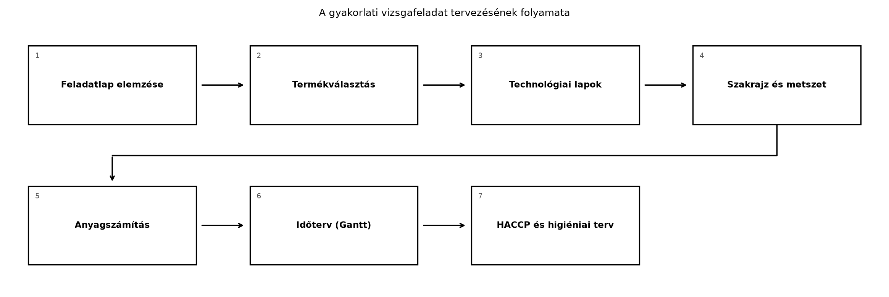

A képzés utolsó hónapjaiban sok tanuló ugyanazzal a kérdéssel szembesül: mi vár rám pontosan a szakmai vizsgán, és hogyan lehet a gyakorlati feladatot úgy megtervezni, hogy ne csak átmenjek, hanem bizonyítsam is a szakmám iránti felkészültséget? A vizsgán a munkáltató szemével néznek téged. A vizsgabizottság nem csupán azt látja, hogy készítesz-e egy tortát, hanem a teljes munkafolyamatodat figyeli: hogyan fogod meg a feladatot, hogyan állsz a pult elé, hogyan tartod a higiéniai szabályokat, és hogyan gazdálkodsz az időddel. Ez az alfejezet a vizsga szerkezetét mutatja be, és ahhoz ad módszert, hogy a gyakorlati vizsgafeladatod („vizsgaremeked”) tervezése mérnöki pontosságú, mégis rugalmas munkaterv legyen. Az itt tanult tervezési módszert a Komplex gyakorló vizsgafeladatok megoldással alfejezetben fogod teljes egészében, összetett gyakorlófeladatokon keresztül alkalmazni.
A cukrász szakmai vizsga követelményei az utóbbi években jelentősen
változtak. A régi, OKJ 34 811 01 szerinti vizsga hagyományosan három
részből állt (írásbeli, gyakorlati, szóbeli). A Szakképzés 4.0
rendszerben a képzés a Képzési és Kimeneti Követelményekre (KKK) és a
Programtantervre (PTT) épül, és a vizsga szerkezete ehhez igazodik.
(ellenőrizendő: az aktuális KKK és a hatályos szakképzési törvény végrehajtási rendeletének pontos vizsgarészei).
A leggyakoribb vizsgarészek a következők:
Jogszabály. Az aktuális vizsgaszabályzat a
szakképzésről szóló jogszabályokra (pl. 2019. évi LXXX. törvény és
végrehajtási rendeletei), valamint az adott szakmára kiadott KKK-ra és
PTT-re épül. A vizsga részletes szervezési és értékelési előírásai
intézményenként és évről évre változhatnak, ezért mindig a vizsgaközpont
által kiadott aktuális Vizsgaszabályzatot kell alapul
venni
(ellenőrizendő: aktuális jogszabályhely és vizsgaszabályzat).
A vizsga sikere három alappilléren múlik: a szakmai tudáson, a dokumentációs készségen, és a vizsganapi higgadtságon. Ez utóbbi a legtöbbször a megtervezettségből fakad.
A gyakorlati vizsgán a legnagyobb hiba az, ha a tanuló a feladatlap elolvasása után azonnal a lisztért nyúl. A vizsgaremek elkészítése mérnöki gondolkodást igényel. A következő technológiai lap a tervezési folyamat ellenőrzőlistája (technikai recept).
Technológiai lap: A vizsgafeladat tervezése és szervezése
(receptek: [Receptúra és anyaghányad: nagyítás, kicsinyítés, szorzószám](cu064.html) alfejezet).(ellenőrizendő: 1169/2011/EU II. melléklet)).Ha az időterv vagy a technológiai lap hiányzik, a vizsgán kapkodás lesz, és a kapkodás az első számú oka a leégésnek és a baleseteknek. A Munkaszervezés és a cukrászüzem munkafolyamatainak tervezése alfejezetben tanult kritikus út és pufferek elve itt válik élesben használt eszközzé.
A gyakorlati feladat általában több termék elkészítését írja elő: egy dísz- vagy hagyományőrző torta, egy minyon vagy szelet, és egy teasütemény vagy uzsonnasütemény. A választásnál a következőket mérlegeld:
A gyakorlati vizsgán a munkatervedet idővonalon (Gantt-diagramon) érdemes ábrázolni. Ebbe beletartozik a mise en place (a hozzávalók kimérése) 15-20 perce, a gépi és kézi műveletek, a sütések, a hűtési idők, a díszítés és a takarítás is.
Az alábbi minta-időterv a 6. feladat idővonalát mutatja: a pihentetési és hűtési idők (sraffozott sávok) alatt párhuzamosan más műveletek futnak, a krém főzésének és hűtésének végén hőmérsékletmérés a kritikus pont, a vastag keret a kritikus utat, a szaggatott keret a puffert jelöli. A HTML-kiadásban a pihentetési, sütési és hűtési idők csúszkával módosíthatók, és a befejezési idő, a kritikus út újraszámolódik.
A következő ábra a gyakorlati vizsgafeladat tervezésének folyamatát mutatja be:

A vizsgán a legnagyobb fejtörést az anyagszámítás okozza. A Receptúra és anyaghányad: nagyítás, kicsinyítés, szorzószám alfejezetben tanult szorzószám módszert itt kell alkalmazni. A vizsga során a technológiai lapon a bruttó tömeg (a méréskor), a nettó tömeg (a feldolgozás után) és a veszteség (a kettő különbsége) mindig szerepeljen.
Példa. A vizsgafeladat tartalmaz egy 18 cm átmérőjű
dísztortát. A recept 24 cm-es formára van kiírva, és 8 közepes tojást ír
elő. Hány tojást mérjünk ki? A 24 cm-es torta alapterülete nagyobb, mint
a 18 cm-esé. Az arány a két kör területének hányadosa, ami az átmérők
négyzetének hányadosával egyenlő:
.
A tojást és a többi hozzávalót is ezzel a szorzóval szorozzuk, a tojást
tömegben: 8 közepes tojás tartalma kb.
(ellenőrizendő: tömegosztály), ebből
felvert tojás kell (kb. 4 tojás és 25 g). A mennyiségeket mindig
grammban és ml-ben írjuk, nem „pohárban” vagy „evőkanálban”
(ellenőrizendő: a vizsgán használt közepes tojás tömegosztálya).
Hasonlóan kell eljárni a tepsi méretű süteményeknél is. Ha a recept egy 60 × 40 cm-es tepsihez van megadva, a vizsgán pedig 40 × 30 cm-es tepsink van, a szorzószám: . Ezt a szorzót kell alkalmazni minden hozzávalóra, és a táblázatot a vizsgadokumentációban is feltüntetni.
Számítási feladat szerkezete (vizsgán is használható):
A gyakorlati vizsgán a vizsgabizottság egy értékelő lapot vezet,
amely a következő fő szempontokat tartalmazza. A pontos pontszámok
intézményenként eltérnek
(ellenőrizendő: aktuális vizsgaszabályzat pontszámai),
ezért itt tanulási arányokat adunk meg:
| Értékelési szempont | Mit figyelnek? | Jellemző arány | Kapcsolódó könyvi egység |
|---|---|---|---|
| Higiénia és élelmiszerbiztonság | munkaruha, hajháló, kézmosás, eszközök tisztasága, hulladékkezelés | 20–25% | A HACCP-rendszer alapelvei |
| Munkavédelem | gépek használata, vágás, égés, forrázás, közlekedés a műhelyben | 10–15% | A munkavédelem rendszere és a cukrász jogai, kötelességei |
| Technológiai szakszerűség | műveleti sorrend, munkaszervezés, receptúra betartása, időbeosztás | 20–25% | Munkaszervezés és a cukrászüzem munkafolyamatainak tervezése |
| Késztermék minősége | tömeg, forma, felület, metszet, íz, illat, állag | 30–35% | A cukrászati készítmények minősége, tömege és hibái |
| Dokumentáció | technológiai lap, szakrajz, anyagigénylő, tömegmérési jegyzőkönyv | 5–10% | Cukrászati termékcsoportok, megnevezések és a technológiai lap |
Az értékelés során a hibák nemcsak a terméken, hanem a munkafolyamaton is csapódnak le. Egy fénytelen, hőkezeletlen krémmel töltött torta azért kap rossz jegyet, mert a vizsgázó nem tartotta be a kritikus határokat.
Az alábbi műveleti sorrend a vizsganapi rutint rögzíti. Ezt érdemes fejben tartani, mert ezzel elkerülhetők a kapkodásból fakadó hibák.
Ellenőrzőlista a gyakorlati vizsga napjára
A mise en place utáni munkahelyet felülnézetben az alábbi helyes/hibás pár mutatja: a helyes elrendezésben a kimért nyersanyagok címkézve, a felhasználás sorrendjében állnak, az eszközök a műveleti sorrendben vannak, a nyers tojás és a kész termék külön zónában van, a hulladékgyűjtő a pult mellett, a technológiai lap és az időterv kéznél. A HTML-kiadásban a két nézet között váltani lehet.
Figyelem. A vizsgán a gépek használatakor ugyanazok a biztonsági szabályok érvényesek, mint a termelésben. A dagasztógépbe vagy habverőgépbe nyúlni tilos. A forró sütőből való kivétel előtt mindig kesztyűt kell használni. A sütőből kipattanó hő és gőz égést okozhat. Biztonsági korlát. A tanuló gépet csak oktatás után és felügyelet mellett kezelhet; a vizsgán csak azokat a gépeket szabad használni, amelyekre a képzés során oktatást kapott.
A vizsgán a késztermékeket a vizsgabizottság mérlegeli és érzékszervi
bírálatnak veti alá. A A cukrászati készítmények
minősége, tömege és hibái alfejezetben tanult pontozási rendszert
itt kell alkalmazni. A termékek méretét és tömegét a technológiai laphoz
viszonyítják. Ha a vizsgaremek tömege 10%-nál nagyobb mértékben eltér,
az pontlevonással jár
(ellenőrizendő: a vizsgaértékelés tömegtűrésének pontos értéke).
A minőségi jellemzők közül a legfontosabb a belső
szerkezet (a metszet) és a higiénikus
kivitelezés. A hibás, nem átsült, folyó krémmel töltött, vagy
nem megfelelően temperált csokoládéval bevont termék a vizsgán
selejtesnek minősül.
Tünet: a vizsgázó az utolsó fél órában kapkod, és a termékek nem készülnek el. Ok: hiányos időterv; a hűtési idők kihagyása a számításból. Megelőzés/javítás: készíts Gantt-diagramot, és a kritikus műveleti időkhöz (sütés, hűtés) adj 10-20% puffert. Ha mégis csúszás van, a díszítés egyszerűsítésével próbáld az időt visszahozni, de a technológiai minimumot (pl. hőkezelés, dermesztés) soha ne vágd le.
Tünet: a krém összecsomósodik, vagy a piskóta lapos és szottyadt. Ok: elmaradt az anyagok hőmérsékletének ellenőrzése, vagy a felvert habot túl korán keverték a masszához. Megelőzés/javítás: a vizsgán mérj minden hőmérsékletet. A habot és a masszát egyenlő hőmérsékletűre hozd, és egy spatulával, óvatosan forgasd össze. A hibás tésztát a sütés előtt nem lehet javítani, de a további lépésekben ügyelj a helyes sorrendre.
Tünet: a vizsgabizottság megjegyzi, hogy a munkaterület szennyezett, a felületeken liszt és tojásmaradék van. Ok: nem történt meg a munkafelület folyamatos tisztítása. Megelőzés/javítás: a hulladékot külön edénybe gyűjtsd, a tojás feltörése után a kezet azonnal mosd meg, és a munkalapot nedves törlőkendővel töröld át. A vizsgán ez éppen annyira fontos, mint a kész termék.
Gábor, aki felnőttképzésben tanult, a gyakorlati vizsga előtt két héttel készítette el a portfólióját. A vizsgafeladta egy 18 cm-es dísztorta, egy tepsi minyon és egy tepsi sajtos teasütemény volt. Gábor a feladatlap elemzése után úgy döntött, hogy az időtervét a kritikus útra építi. Először a teasütemény omlós tésztáját gyúrta be, mert annak pihennie kellett a hűtőben. Amíg a tészta hűlt, elkészítette a dísztorta felvert tésztáját. A sütőben egyszerre sütötte a minyonokat és a teasüteményeket, mert a hőmérsékletük hasonló volt. A krémeket a sütés alatt főzte meg, és a kész krémet azonnal jeges vízfürdőbe állította, hogy elérje a kritikus hőmérsékletet. A dokumentációjában a technológiai lapon minden mérési pontot rögzített, és a tömegmérési jegyzőkönyvet is kitöltötte. Gábor a vizsgán 20 perccel az idő előtt végzett, és a termékei a minőségi ellenőrzésen kiváló értékelést kaptak. A sikere nem a szerencsén múlt, hanem azon, hogy a vizsgát nem a tésztával, hanem a tervezéssel kezdte.
Adott. 1 db 24 cm-es torta receptje: 6 tojás, 300 g cukor, 300 g liszt.
Megoldások az alfejezet végén.
1. feladat (A). Sorold fel a gyakorlati vizsgán a termékek elkészítésének általános műveleti sorrendjét, a higiéniai munkakezdéstől a dokumentációs lépésig.
2. feladat (A). Magyarázd el, mi az a szorzószám, és miért kell azt a vizsgán a tepsi vagy a tortaforma méretének megváltoztatásakor használni.
3. feladat (B). A vizsgán 25 db linzer teasütemény kell készíteni. A recept 60 db-ra: 900 g liszt, 600 g vaj, 300 g cukor, 60 g tojássárgája. Számítsd ki a hozzávalókat 25 db-ra.
4. feladat (B). A dísztorta receptje 10 tojást ír elő 24 cm-es formára. A vizsgán 20 cm-es formát kapsz. Hány gramm tojást mérj ki (1 közepes tojás tartalmát kb. 50 g-mal számolva), és mennyi lesz a liszt, ha a 24 cm-es recept 300 g lisztet ír elő?
5. feladat (C). A vizsgán a tejszínes krém
hőmérséklete 35 °C
(ellenőrizendő: hatályos hőmérsékleti útmutató) a töltés
előtt. Mi a hiba ebben a folyamatban? Hogyan javítanád a gyakorlatban,
és mit jelölnél be a HACCP-lapon?
6. feladat (D). Készítsd el egy szabadon választott vizsgaremek (pl. 18 cm-es dísztorta + 30 db minyon + 40 db teasütemény) teljes vizsgatervét: termékválasztás, technológiai lap kivonat, anyagigénylő táblázat, Gantt-idővonal a kulcsműveletekkel, higiéniai és HACCP-lépések felsorolása.
Önellenőrzés – válaszok. 1. Hamis. A feladatlap elemzése az első lépés. 2. . Tojás: tojás; 1 közepes tojás tartalmát kb. 50 g-mal számolva (ellenőrizendő) tojást mérünk ki (kb. 3 egész tojás és 19 g felvert tojás). 3. A hőkezelés és a hűtött tárolási hőmérséklet. 4. A dokumentáció bizonyítja a nyomon követhetőséget és a kritikus pontok ellenőrzését. 5. Gluténmentes terméket ugyanazon a felületen készíteni, mint a búzalisztest. ∎
1. feladat (A). A fenti ellenőrzőlista (Higiéniai munkakezdés, Mise en place, tészta, sütés, krémek, összeállítás, takarítás, dokumentáció).
2. feladat (A). A szorzószám a kívánt és az eredeti mennyiség hányadosa: . A tepsi vagy forma méretének változásakor a hozzávalók tömege nem lineárisan, hanem a terület (négyzetes) arányában változik. A formák területét kell összehasonlítani, különben a tészta túl vékony vagy túl vastag lesz.
3. feladat (B). Adott: 60 db. Keresett: 25 db. . Liszt: . Vaj: . Cukor: . Tojássárgája: . Ellenőrzés: az arány megmaradt, liszt:vaj:cukor , azaz a tészta állaga nem változik.
4. feladat (B). . Tojás: (kb. 7 tojás). Liszt: . Ellenőrzés: a 20 cm forma kisebb, mint a 24, tehát a kiszámolt mennyiség kevesebb.
5. feladat (C). 35 °C-on a tejszínhab-krém
mikrobiális veszélyzónában van, és a hab nem is stabil. Azonnal jeges
vízfürdőbe állítjuk, és folyamatos kevergetés mellett 5 °C alá hűtjük
(ellenőrizendő: a pontos hűtési hőmérséklet és idő). A
HACCP-lapon a gyors hűtést, a maghőmérséklet mérését és a hűtőbe
helyezés időpontját jelöljük.
6. feladat (D). A megoldás egy komplett dokumentáció. A táblázatnak tartalmaznia kell a termékeket, a technológiai kulcslépéseket, az anyagigénylőt (bruttó tömeg), és az idővonalat (pl. 8:00 munkakezdés, 8:10 mise en place, 8:30 omlós tészta, 9:00 sütés, 9:30 krém, 10:30 összeállítás, 11:00 takarítás, 11:30 dokumentáció). A higiéniai résznél a kézmosás, a hőmérséklet-ellenőrzés és az allergénkereszt-szennyeződés elkerülése a hangsúlyos.
A szakmai vizsga szerkezete a jogszabályi környezettől függően
változik (ellenőrizendő: aktuális KKK és vizsgaszabályzat),
de a gyakorlati rész mindig a tervezésen és a higiénikus, minőségi
munkavégzésen alapul. A vizsgaremek tervezése a feladatlap elemzésével
kezdődik, a termékek technológiai lapjainak, anyagszükségletének és
időtervének elkészítésével folytatódik. A receptúra-átszámításnál a
szorzószámot a formák területének arányából számoljuk:
.
Az értékelés során a legnagyobb súllyal a higiénia, a technológiai
szakszerűség és a késztermék minősége bír. A vizsganapi kapkodás
elkerülhető, ha a munkatervben puffereket hagyunk, és a kritikus
pontokat (hőkezelés, hűtés) mérjük. Továbbvitt
eredmény. Az itt megismert vizsgaterv-módszert a Komplex gyakorló vizsgafeladatok megoldással
alfejezetben valós, összetett gyakorlófeladatok megoldására használjuk
fel.
Felhasznált forrástípusok: a szakképzésről szóló 2019. évi LXXX. törvény és végrehajtási rendeletei; a 852/2004/EK rendelet élelmiszer-higiéniai alapelvei; a 1169/2011/EU rendelet allergénjelölési előírásai; a Munkaszervezés és a cukrászüzem munkafolyamatainak tervezése, a A cukrászati készítmények minősége, tömege és hibái és a Sütemény- és dísztortarajzok alfejezetekben tanult módszerek. A szövegben ellenőrizendő pontok: a vizsga pontos szerkezete és pontszámai (aktuális KKK és vizsgaszabályzat), a közepes tojás tömegosztálya, a tejszínes krém pontos hűtési hőmérséklete, a vizsga tömegtűrésének értéke, valamint a gyakorlati vizsgán használható gépek listája a vizsgaközpontban.